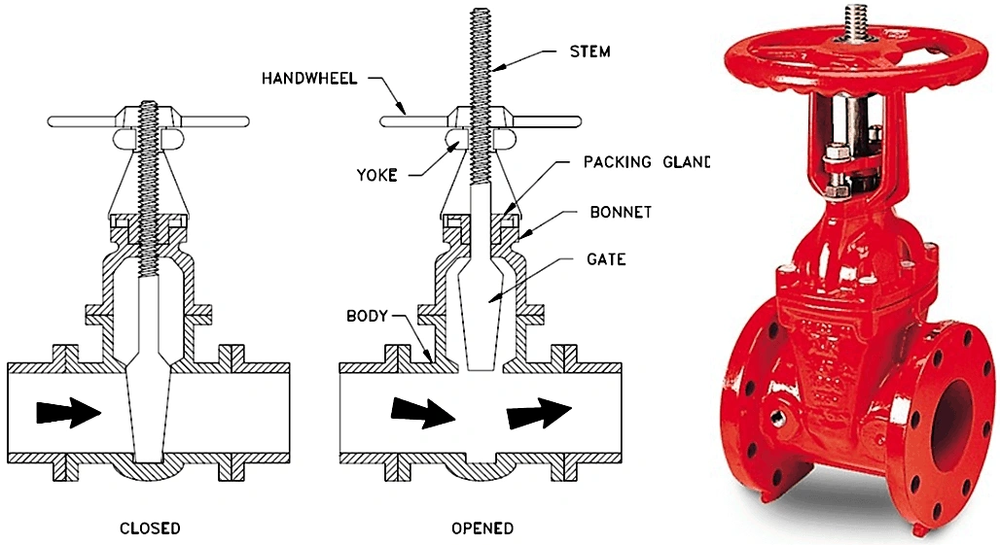

Gate valves are slide valves with a parallel-faced gate-like closure member. This closure member may consist of a single disc or twin discs designed to start and stop the flow of liquid, allowing users to isolate a section of pipe when required.
Efforts to overcome the alignment problem of plain wedges has led to the development of self-aligning wedges. The simplest of these is the flexible wedge which is composed of two discs with an integral boss in between. The wedge is sufficiently flexible to find its own orientation. Because the wedge is simple and contains no separate components that could rattle loose in service, this construction has become a favoured design.
A knife gate valve is a well-known type that is designed primarily for use with very thick or viscous fluids, such as slurry or powder-carrying liquid. The disks in the knife gate valve model are tapered (effectively sharpened, hence the name) at one end to enable them to cut and move through thicker media more easily when closing.
Solid wedge gate valves (or plain wedge valves) tend to be the most widely used. They are often among the simplest and cheapest options but offer good mechanical strength. They are broadly suitable for nearly all types of fluid media. Their robust, single-piece construction makes them especially appropriate for use in pipelines with turbulent fluid flow.
Gate valves are actuated by linear or multi-turn actuators. This could be pneumatic or hydraulic using a piston or a diaphragm. Linear actuation is also possible using electric and manual actuators. This could be manual through the use of a multi-turn hand-wheel, or electric using a motor and gear box attached to a rack and pinion or scotch yolk to convert between rotational and linear motion.